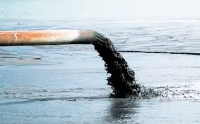
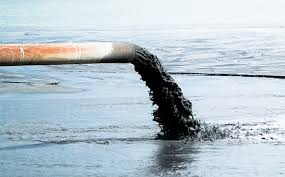

Water Pollution

Water pollution is when harmful substances, like chemicals or rubbish, get into our rivers, lakes, and oceans, making the water dirty and unsafe. These harmful things can come from factories, farms, or even from the trash we throw away. When this happens, animals that live in the water, like fish and turtles, can get sick. Sometimes, it even hurts plants that grow in the water. If the water is polluted, it can also affect us because we need clean water to drink, swim, shower, cook, and other things.
Water pollution can happen in many ways. For example, when people throw plastic bottles or wrappers into the water, these things don't break down quickly. They can float around in the water for a long time and hurt animals. Another problem is when chemicals from farms wash into rivers and lakes after it rains. These chemicals can harm both the water and the animals living there.
Before vs After


 
\

\